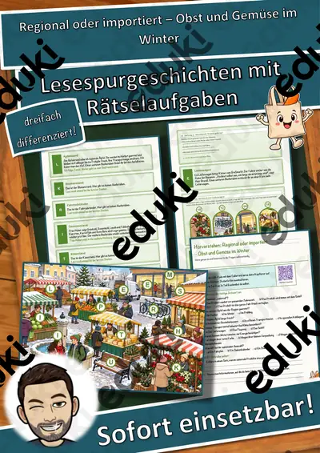
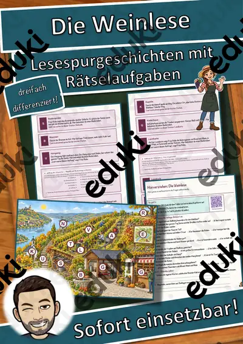
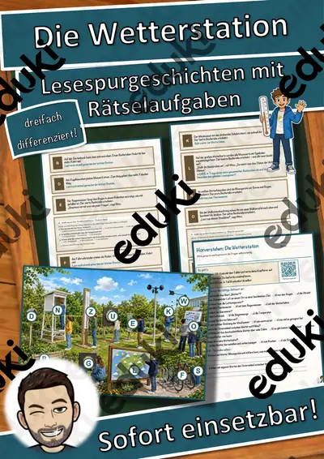
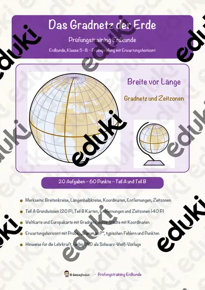
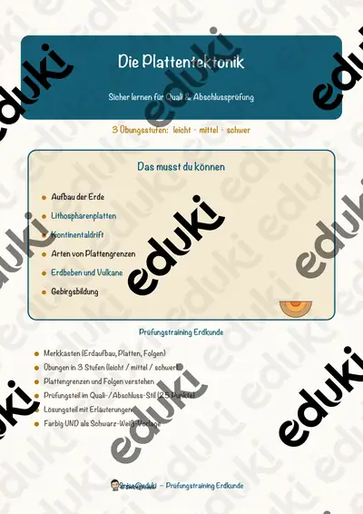
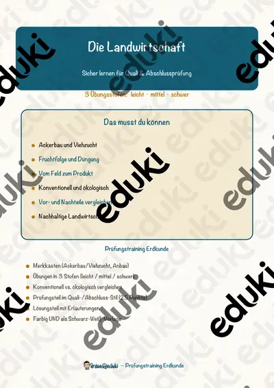
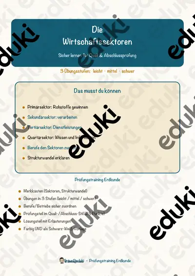
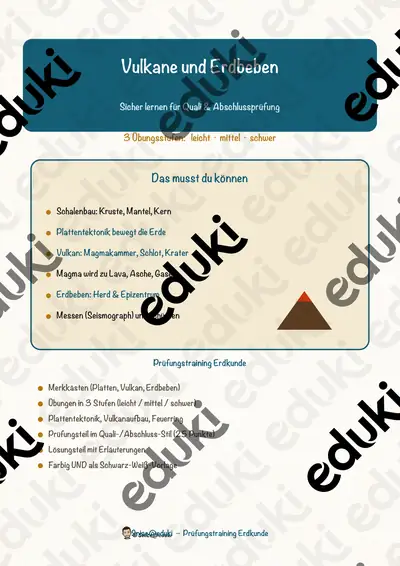
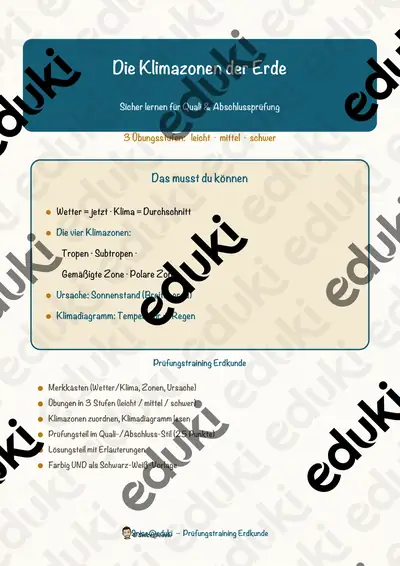

Materialpaket Winter für die 9. Klasse: 5 Lesespurgeschichten mit Rätselaufgaben fächerübergreifend (Hungerwinter 1947, Permafrost, Christbaummarkt & mehr)

Materialpaket Winter und Advent für die 8. Klasse: 10 Lesespurgeschichten mit Rätselaufgaben fächerübergreifend (Polarlichter, Streusalz, Krippenbau & mehr)

Der Wettlauf zum Südpol – eine Expedition ins ewige Eis – Lesespurgeschichte mit Rätselaufgaben (Klasse 7)

Weltwassertag – das versteckte Wasser in Alltagsdingen – Lesespurgeschichte mit Rätselaufgaben (Klasse 7)

Woher kommt mein Spielzeug – die Weltreise eines Spielzeugautos – Lesespurgeschichte mit Rätselaufgaben (Klasse 8)

Regional oder importiert – Obst und Gemüse im Winter – Lesespurgeschichte mit Rätselaufgaben (Klasse 7)

Milch – vom Hof ins Kühlregal – Lesespurgeschichte mit Rätselaufgaben (Klasse 6)

Das Tiefdruckgebiet – Lesespurgeschichte mit Rätselaufgaben (Klasse 8)

Der Nationalpark – Lesespurgeschichte mit Rätselaufgaben (Klasse 5)

Das Planetarium – Lesespurgeschichte mit Rätselaufgaben (Klasse 5)

Die Weinlese – Lesespurgeschichte mit Rätselaufgaben (Klasse 7)

Der Treibhauseffekt – Lesespurgeschichte mit Rätselaufgaben (Klasse 9)

Der Tafelberg – Lesespurgeschichte mit Rätselaufgaben (Klasse 9)

Die Gezeiten – Lesespurgeschichte mit Rätselaufgaben (Klasse 9)

Der Hurrikan – Lesespurgeschichte mit Rätselaufgaben (Klasse 9)

Der Canyon – Lesespurgeschichte mit Rätselaufgaben (Klasse 8)

Die Sanddüne – Lesespurgeschichte mit Rätselaufgaben (Klasse 8)

Die Taiga – Lesespurgeschichte mit Rätselaufgaben (Klasse 8)

Die Erde – Lesespurgeschichte mit Rätselaufgaben (Klasse 8)

Die Tundra – Lesespurgeschichte mit Rätselaufgaben (Klasse 8)

Das Hochgebirge – Lesespurgeschichte mit Rätselaufgaben (Klasse 8)

Die Savanne – Lesespurgeschichte mit Rätselaufgaben (Klasse 8)

Der Eisberg – Lesespurgeschichte mit Rätselaufgaben (Klasse 8)

Die Höhle – Lesespurgeschichte mit Rätselaufgaben (Klasse 8)

Der Brunnen – Lesespurgeschichte mit Rätselaufgaben (Klasse 8)

Der Meeresboden – Lesespurgeschichte mit Rätselaufgaben (Klasse 8)

Die Oase – Lesespurgeschichte mit Rätselaufgaben (Klasse 8)

Der Salzstock – Lesespurgeschichte mit Rätselaufgaben (Klasse 9)

Der Braunkohletagebau – Lesespurgeschichte mit Rätselaufgaben (Klasse 8)

Die Lawine – Lesespurgeschichte mit Rätselaufgaben (Klasse 8)

Der Mäander – Lesespurgeschichte mit Rätselaufgaben (Klasse 8)

Der Permafrost – Lesespurgeschichte mit Rätselaufgaben (Klasse 9)

Der Tsunami – Lesespurgeschichte mit Rätselaufgaben (Klasse 8)

Der Wasserturm – Lesespurgeschichte mit Rätselaufgaben (Klasse 8)

Die Tropfsteinhöhle – Lesespurgeschichte mit Rätselaufgaben (Klasse 8)

Die Atmosphäre – Lesespurgeschichte mit Rätselaufgaben (Klasse 8)

Das Erdbeben – Lesespurgeschichte mit Rätselaufgaben (Klasse 9)

Der Kohlenstoffkreislauf – Lesespurgeschichte mit Rätselaufgaben (Klasse 9)

Die Plattentektonik – Lesespurgeschichte mit Rätselaufgaben (Klasse 9)

Der Fjord – Lesespurgeschichte mit Rätselaufgaben (Klasse 8)

Das Hochmoor – Lesespurgeschichte mit Rätselaufgaben (Klasse 8)

Die Schlucht – Lesespurgeschichte mit Rätselaufgaben (Klasse 8)

Der Tunnel – Lesespurgeschichte mit Rätselaufgaben (Klasse 8)

Der Steinbruch – Lesespurgeschichte mit Rätselaufgaben (Klasse 8)

Das Pumpspeicherkraftwerk – Lesespurgeschichte mit Rätselaufgaben (Klasse 8)

Das Wasserwerk – Lesespurgeschichte mit Rätselaufgaben (Klasse 8)

Das Gewächshaus – Lesespurgeschichte mit Rätselaufgaben (Klasse 8)

Das Delta – Lesespurgeschichte mit Rätselaufgaben (Klasse 8)

Die Entsalzungsanlage – Lesespurgeschichte mit Rätselaufgaben (Klasse 8)

Der Wasserfall – Lesespurgeschichte mit Rätselaufgaben (Klasse 8)

Die Bohrinsel – Lesespurgeschichte mit Rätselaufgaben (Klasse 9)

Der Tagebau – Lesespurgeschichte mit Rätselaufgaben (Klasse 9)

Die Müllverbrennungsanlage – Lesespurgeschichte mit Rätselaufgaben (Klasse 9)

Der Mähdrescher – Lesespurgeschichte mit Rätselaufgaben (Klasse 8)

Die Windmühle – Lesespurgeschichte mit Rätselaufgaben (Klasse 8)

Die Wanderdüne – Lesespurgeschichte mit Rätselaufgaben (Klasse 8)

Die Steilküste – Lesespurgeschichte mit Rätselaufgaben (Klasse 8)

Der Leuchtturm – Lesespurgeschichte mit Rätselaufgaben (Klasse 8)

Der Deich – Lesespurgeschichte mit Rätselaufgaben (Klasse 8)

Die Schleuse – Lesespurgeschichte mit Rätselaufgaben (Klasse 8)

Die Talsperre – Lesespurgeschichte mit Rätselaufgaben (Klasse 8)

Der Geysir – Lesespurgeschichte mit Rätselaufgaben (Klasse 8)

Der Fluss – Lesespurgeschichte mit Rätselaufgaben (Klasse 8)

Der Gletscher – Lesespurgeschichte mit Rätselaufgaben (Klasse 8)

Der Boden – Lesespurgeschichte mit Rätselaufgaben (Klasse 5)

Der Wasserkreislauf – Lesespurgeschichte mit Rätselaufgaben (Klasse 6)

Das Gewitter – Lesespurgeschichte mit Rätselaufgaben (Klasse 6)

Das Bergwerk – Ein Abenteuer unter Tage – Lesespurgeschichte mit Rätselaufgaben (Klasse 5)

Die Orientierung – Schatzsuche mit Kompass und Karte – Lesespurgeschichte mit Rätselaufgaben (Klasse 5)

Der Bahnhof – Eine Reise mit der Bahn – Lesespurgeschichte mit Rätselaufgaben (Klasse 5)

Das Papier – Vom Baum zum Papier – Lesespurgeschichte mit Rätselaufgaben (Klasse 5)

Die Wolle – Vom Schaf zum Pullover – Lesespurgeschichte mit Rätselaufgaben (Klasse 5)

Das Brot – Vom Korn zum Brot – Lesespurgeschichte mit Rätselaufgaben (Klasse 5)

Das Trinkwasser – Lesespurgeschichte mit Rätselaufgaben (Klasse 6)

Der Klimawandel – Lesespurgeschichte mit Rätselaufgaben (Klasse 8)

Der Vulkan – Lesespurgeschichte mit Rätselaufgaben (Klasse 7)

Die Klimagürtel der Erde – Lesespurgeschichte mit Rätselaufgaben (Klasse 7)

Der tropische Regenwald – Lesespurgeschichte mit Rätselaufgaben (Klasse 7)

Der Flughafen – Lesespurgeschichte mit Rätselaufgaben (Klasse 8)

Der Hafen – Lesespurgeschichte mit Rätselaufgaben (Klasse 8)

Die Wetterstation – Lesespurgeschichte mit Rätselaufgaben (Klasse 7)

Die Landwirtschaft – Lesespurgeschichte mit Rätselaufgaben (Klasse 7)

Auf hoher See – Lesespurgeschichte mit Rätselaufgaben (Klasse 5)

Wenn die Erde bebt – Lesespurgeschichte mit Rätselaufgaben (Klasse 6)

Die Reise um die Erde – Lesespurgeschichte mit Rätselaufgaben (Klasse 5)

Die große Länderrallye – Lesespurgeschichte mit Rätselaufgaben (Klasse 5)

Ein Tag in den Alpen – Lesespurgeschichte mit Rätselaufgaben (Klasse 5)

Auf den Spuren der Alpen – Lesespurgeschichte mit Rätselaufgaben (Klasse 5)

Das Gradnetz der Erde – Prüfungstraining Erdkunde (Klasse 8)

Die Bevölkerungsentwicklung – Prüfungstraining Erdkunde (Klasse 9)

Der Tourismus – Prüfungstraining Erdkunde (Klasse 9)

Die Verstädterung – Prüfungstraining Erdkunde (Klasse 9)

Die Plattentektonik – Prüfungstraining Erdkunde (Klasse 8)

Die Landwirtschaft – Prüfungstraining Erdkunde (Klasse 8)

Rohstoffe und Energie – Prüfungstraining Erdkunde (Klasse 9)

Der Klimawandel – Prüfungstraining Erdkunde (Klasse 9)

Die Wirtschaftssektoren – Prüfungstraining Erdkunde (Klasse 8)

Vulkane und Erdbeben – Prüfungstraining Erdkunde (Klasse 8)

Die Klimazonen der Erde – Prüfungstraining Erdkunde (Klasse 8)

Lawine Lückentext mit Wortspeicher Hörverstehen und Suchsel

Waldbrand Lückentext mit Wortspeicher - Naturkatastrophe

Hochwasser Lückentext mit Wortspeicher - Naturkatastrophe

Tornado Lückentext mit Wortspeicher - Naturkatastrophe

Hurrikan Lückentext mit Wortspeicher - Naturkatastrophe

Vulkanausbruch Lückentext mit Wortspeicher - Naturkatastrophe

Tsunami Lückentext mit Wortspeicher - Naturkatastrophe

Erdbeben Lückentext mit Wortspeicher Hörverstehen und Suchsel

Aargau Lückentext mit Wortspeicher

Länder-Reisepass: Steckbriefe für Europa und die Welt

Steckbriefe Berühmte Bauwerke und Weltwunder – Materialpaket (12 Bauwerke, differenziert, mit Lösungen)

Steckbriefe Länder Asiens – Materialpaket (12 Länder mit Flaggen, differenziert, mit Lösungen)

Steckbriefe Länder Afrikas – Materialpaket (12 Länder mit Flaggen, differenziert, mit Lösungen)

Steckbriefe Länder Amerikas – Materialpaket (12 Länder aus Nord-, Mittel- und Südamerika mit Flaggen, differenziert, mit Lösungen)

Erdbeben in Haiti - Rückblick - Aktuelle Ereignisse

Naturkatastrophen - Materialpaket - Naturgefahren Naturkatastrophen #Silvesterknaller24 #edukiknaller24 #Glückskekse25

Landtagswahl Nordrhein-Westfalen 2022 - Steckbriefe Parteien

Landtagswahl Schleswig-Holstein 2022 - Steckbriefe Parteien

Steckbrief Europa (Zypern)

Suchsel Tschechien - differenziert (Buchstabengitter)

Steckbrief Europa (Slowenien)

Materialpaket Steckbriefe Länder Europa #demokratiestärken

Steckbrief Europa (Schweden)

Steckbrief Europa (Weißrussland) (Belarus)

Steckbrief Europa (Vereinigtes Königreich)

Steckbrief Europa (Vatikanstadt)

Steckbrief Europa (Ungarn)

Steckbrief Europa (Ukraine)

Steckbrief Europa (Türkei)

Steckbrief Europa (Tschechien)

Steckbrief Europa (Spanien)

Steckbrief Europa (Slowakei)

Steckbrief Europa (Serbien)

Steckbrief Europa (Schweiz)

Steckbrief Europa (San Marino)

Steckbrief Europa (Russland)

Steckbrief Europa (Rumänien)

Steckbrief Europa (Republik Moldau)

Steckbrief Europa (Portugal)

Steckbrief Europa (Polen)

Steckbrief Europa (Österreich)

Steckbrief Europa (Norwegen)

Steckbrief Europa (Nordmazedonien)

Steckbrief Europa (Niederlande)

Steckbrief Europa (Montenegro)

Steckbrief Europa (Monaco)

Steckbrief Europa (Malta)

Steckbrief Europa (Litauen)

Steckbrief Europa (Liechtenstein)

Steckbrief Europa (Lettland)

Steckbrief Europa (Kroatien)

Steckbrief Europa (Kosovo)

Steckbrief Europa (Italien)

Steckbrief Europa (Island)

Steckbrief Europa (Irland)

Steckbrief Europa (Griechenland)

Steckbrief Europa (Frankreich)

Steckbrief Europa (Finnland)

Steckbrief Europa (Estland)

Steckbrief Europa (Deutschland)

Steckbrief Europa (Dänemark)

Steckbrief Europa (Bulgarien)

Steckbrief Europa (Bosnien und Herzegowina)

Steckbrief Europa (Belgien)

Steckbrief Europa (Andorra)

Steckbrief Europa (Albanien)

Materialpaket Regierungsbezirke Bayern inkl. passenden Informationsblättern #demokratiestärken

Materialpaket Steckbriefe Bundesländer Österreich #demokratiestärken

Steckbrief Regierungsbezirk Unterfranken inkl. Informationsblatt

Steckbrief Regierungsbezirk Schwaben inkl. Informationsblatt

Steckbrief Regierungsbezirk Oberpfalz inkl. Informationsblatt

Steckbrief Regierungsbezirk Oberfranken inkl. Informationsblatt

Steckbrief Regierungsbezirk Oberbayern inkl. Informationsblatt

Steckbrief Regierungsbezirk Niederbayern inkl. Informationsblatt

Steckbrief Regierungsbezirk Mittelfranken inkl. Informationsblatt

Deutschland: Steckbrief Bundesländer Deutschland Materialpaket Bundesländer Deutschland #demokratiestärken

Steckbrief Bundesland Wien

Steckbrief Bundesland Vorarlberg

Steckbrief Bundesland Tirol

Steckbrief Bundesland Steiermark

Steckbrief Bundesland Oberösterreich

Steckbrief Bundesland Niederösterreich

Steckbrief Bundesland Salzburg

Steckbrief Bundesland Kärnten

Steckbrief Bundesland Burgenland

Steckbrief Bundesland Brandenburg

Steckbrief Bundesland Thüringen

Steckbrief Bundesland Schleswig-Holstein

Steckbrief Bundesland Sachsen-Anhalt

Steckbrief Bundesland Sachsen

Steckbrief Bundesland Saarland

Steckbrief Bundesland Rheinland-Pfalz

Steckbrief Bundesland Nordrhein-Westfalen

Steckbrief Bundesland Niedersachsen

Steckbrief Bundesland Mecklenburg-Vorpommern

Steckbrief Bundesland Hessen

Steckbrief Bundesland Hamburg

Steckbrief Bundesland Bremen

Steckbrief Bundesland Berlin

Steckbrief Bundesland Bayern

Steckbrief Bundesland Baden-Württemberg

Kontinente, Grundschule Kontinente

Wasserkreislauf - Homeschooling

Materialpaket Europa, Europäische Union (auch Homeschooling) Europa

Europäische Union Europa Domino Europa #demokratiestärken

Europa Lernwerkstatt Europa (auch Homeschooling) Europa
Keine Materialien gefunden – versuch einen anderen Suchbegriff oder Filter.